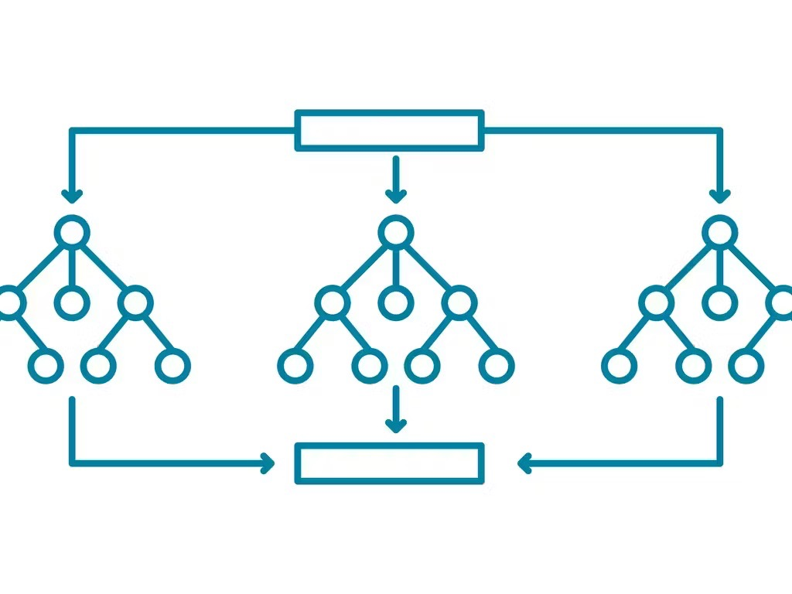

ML-Based Circuit Optimization
This project uses machine learning to optimize quantum circuits by predicting the best TKET pass for reducing gate counts. I generated 48 unoptimized circuits in Qiskit, varying qubit counts from 2 to 5 and depths from 1 to 4, then converted them to TKET format with gates like Hadamard, CNOT, and T. Features such as qubit count, depth, and gate tallies are extracted to train a Random Forest Classifier, helping identify which optimization reduces circuit complexity most effectively.
The model evaluates three TKET passes—CliffordSimp, FullPeepholeOptimise, and PauliSimp—on each circuit, selecting the one with the largest gate reduction. Trained on 80% of the data and tested on 20%, it achieves up to 100% accuracy, with connectivity and CNOT counts being top predictors. For a sample circuit with 4 qubits and 6 CNOT gates, it correctly suggests CliffordSimp. This approach streamlines circuit optimization. View the implementation here.
